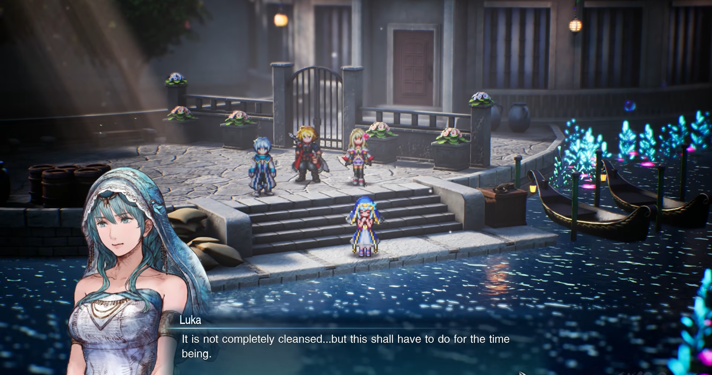
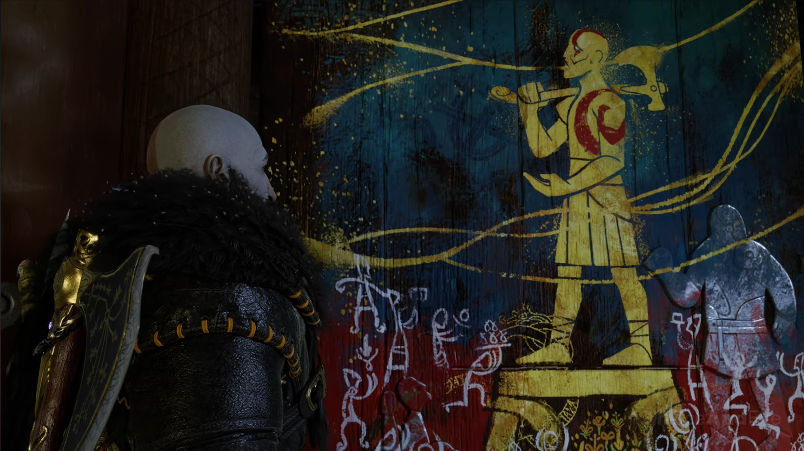
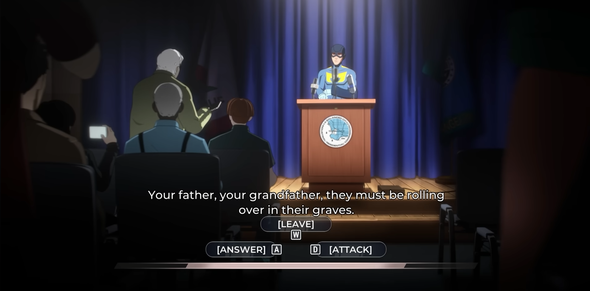

In certain role-playing games, there is a lot of dialogue to progress into the gameplay, to gain an understanding of the world, to understand some dynmaics or for any reason. However, oftentimes, a lot of it is not voiced and it is up to the player to read. Books normally requires reading the entire time, but those are more focused on imagination. Seeing a world that is attempting to interact with you on every level except audio can feel a bit distracting from the experience. At the same time, to be in a world where every line is asking for your attention can be exhausting. So, in terms of pacing, can a story be improved just from having more voicelines in it?

Games oftentimes feature a lot of combat, such as God of War or The Last of Us. But these games, or at least their later iterations mainly focus on the idea of creating peace or not continuing the cycle of violence. This can seem like it comes into contradiction with the combat being a key focus of the gameplay, with several features to try to make exciting. So, can the two aspects of the game exist or do they conflict too harshly?

In choice-driven games, players are given the choice to decide what the main character(s) do and which direction the story can go. With this freedom, to ultimately represent this freedom, can a player's choices lead to a poorly written ending? An example of this is a player deciding to with one belief with one character and then another when around a different character. Or acting one way for the entire game to only switch beliefs in the final choice.